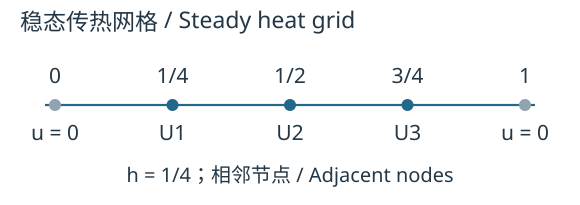

函数、微分方程与矩阵
Functions, Differential Equations, and Matrices
拓展选读 / Optional Exploration · 课程应用补充。 已有一般向量空间与线性映射、核和值域允许把未知对象从数列换成函数。以下区分函数算子、有限维状态方程与网格代数方程；它们相互连接，但解的对象不同。
未知量是一条函数 The Unknown Is a Function
质量 、阻尼系数 、弹簧刚度 固定时，受给定外力函数 的位移满足 在一个时间区间 上，可令 ，即输入具有连续二阶导数的实函数，输出连续实函数。对常数 ， 来自导数的线性与逐项相加。这里未知的是整条 ，不是一个瞬时数字；这些函数空间一般不是有限维。
无外力的解构成 ；若 有一个特解 ，则全部解为 。理由与第一部分的特解加齐次解相同：任意两解之差被送到零，反向相加也成立。相关算子与叠加说明可参阅MIT线性DE讲义。
方程还需要初始或边界条件才能描述具体实验。固定 的初值问题，在这里的连续系数和非零最高阶系数下有唯一解。若给非齐次边界条件，例如 ，解集不能直接称为向量子空间；两解之差须满足齐次边界条件。因此要一起检查算子方程和附加条件，不能只看 。
自检。 、 时，用特解1和两个齐次解写全部解；再施加 。
提示 / Hint
先用 ，再把初值代入。
完整解答 / Full Solution
；初值给 ，故 。代回算子得到1。这两个齐次解张成全部齐次解使用二阶ODE初值唯一性；不能只凭找到了两个函数就断言张成。
状态向量仍然随时间变化 A State Vector Still Depends on Time
令 ，上式等价于 每个时刻的状态在 ，但未知解仍是向量值函数。它不是一次解普通代数方程 就结束。
更一般的状态方程可写 。常系数且可对角化时，第五部分的模态分解用一个固定基把方程分开。若随时间选基 ，求导会多出 ；所以不能把常矩阵的公式无条件用于任意时变矩阵。
网格把函数问题近似成代数问题 A Grid Approximates a Function Problem by Algebra
设细杆长度标准化为1、两端温度固定为0，热导率等常数也已标准化。稳态温度 与热源 满足 取步长 、内部点 ，用 表示待求节点温度。中心差分用相邻节点近似二阶导数： 边界值 已知，只剩三个未知数， 每行只联结本节点及相邻节点，所以矩阵是三对角稀疏矩阵。若端点为 ，移项后等号右边向量的第一项加 、末项加 ；不能沿用零边界的右边。

用第二部分LU方法分解 网格和边界类型不变时，换热源只改变等号右边的向量，可复用同一分解。离散算子的来源及边界移项见Strang差分讲义；本页只使用一维三个内部点。
自检。 取 ，用消元或LU求 ，并与 的节点值比较。
提示 / Hint
右边是 。由对称性先猜 ，但仍须代入全部三行核验。
完整解答 / Full Solution
解为 ，三行分别给 、、。二次函数 满足原ODE及端点，其节点值恰好相同，因为中心二阶差分对二次函数精确。一般函数仍有网格近似误差，这一特例不意味着所有差分解都精确。
三个层次与线性边界 Three Levels and the Limits of Linearity
| 问题 / Problem | 未知对象 / Unknown | 线性代数带来的简化 / Simplification |
|---|---|---|
| 函数，一般处于无限维函数空间 | 核、特解与叠加；附加条件另计 | |
| 有限维状态的时间函数 | 常系数且可对角化时用固定特征基解耦 | |
| 有限个节点近似值 | 消元/LU求解；多热源复用同一系数矩阵 |
例如 离散后仍含 ，是非线性方程。Newton迭代在每一步解一个线性化系统，并不使原问题变成线性问题。区分这些层次，才能知道“用了矩阵”究竟解决了哪一步。
教材应用：数字信号 / Textbook Application: Digital Signals · 教材应用：差分方程 / Textbook Application: Difference Equations · 第五部分：连续演化 / Part 5: Continuous Evolution